Frequently Asked Questions
Welcome to the new webcenter.us.oracle.com. Here is a list of questions that might help you. If you can't find an answer to your question, or you think we should add questions to this list, drop a note to irdevadmin_ww@oracle.com.
Here's a snapshot of the new interface, in case you haven't seen it yet.
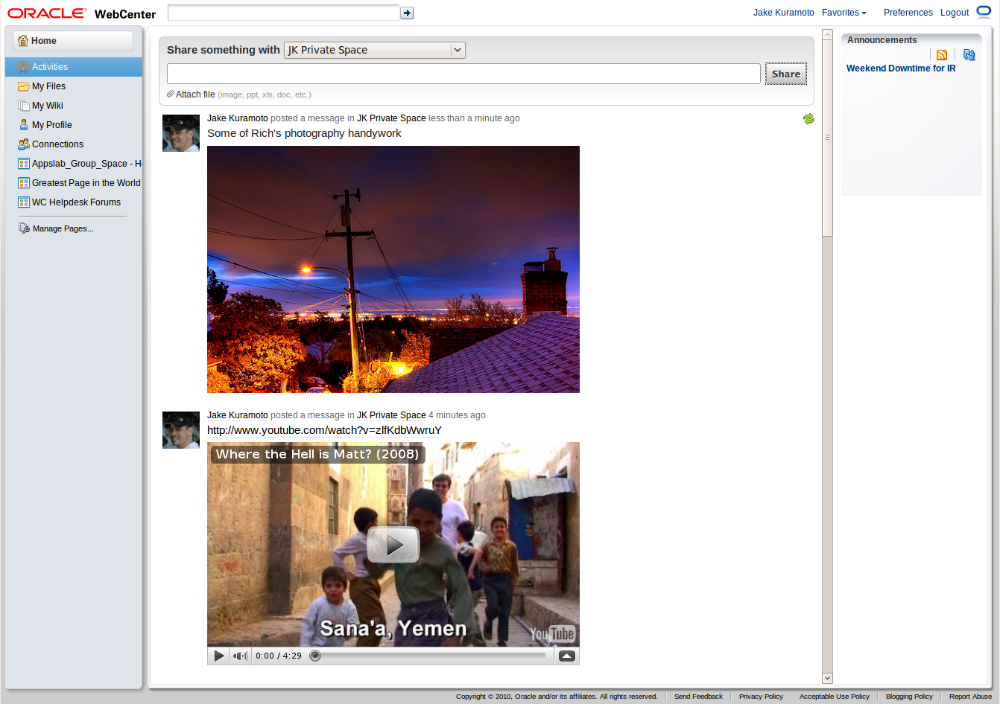
General redesign questions
- What were the goals of this redesign?
- How can I provide feedback?
- What browsers do you support? What if I'm using an unsupported one?
- Why am I not seeing the UI shown in the pictures?
- Is this going into product? Will customers see this interface?
- Why did you replace the WebCenter landing page with Activities?
-
Who's responsible for these changes?
Feature-related questions
-
What's new?
- What is shown on the Home page?
-
Why don't I see any activity?
-
How do I comment on a post?
- Who can see my activity?
- How can I reply to a post I see in my activity?
- What video sites do you support for inline viewing?
- What image types do you support for inline viewing?
-
How do captions work for inline content?
-
Are there viewers for any other file types?
How-to questions
- How do I invite someone to join my network?
- How do I accept an invitation to network?
- How can I upload and manage my documents?
-
How do I setup WebDAV to manage my documents?
-
How do I find my Group Spaces?
-
What Groups Spaces are displayed in the list?
-
How do I create a page?
- How do I edit a page?
- Why do some group spaces look so different?
- How can I find my Saved Searches?
-
How do I find my invitations to join a group space?
- How do I access my Tags?
-
How do I access my Notes?
-
How do I access my Worklist?
-
How do I access my Recent Documents?
- How can I collapse the left hand navigation bar?
-
Can I change the skin? Why don't I see the skin I was using previously?
- How do I create a new Group Space?
- What is the URL to my Group Space?
- How do I add members to my Group Space?
- How do I delete an item from my activity stream?
-
How do I report an urgent problem?
- How do I get to the WC Helpdesk Forums page?
-
Where do I sign-up to get updates about webcenter.us.oracle.com?
- How can I change my password for webcenter.us.oracle.com?
General redesign questions
What were the goals of this redesign?
The redesign project had several goals.First, we wanted to create a frictionless interface for sharing information with other users, similar to what you find on the consumer web at sites like Facebook and Twitter and inside the Oracle firewall at sites like Connect (connect.oraclecorp.com) and OraTweet (oratweet.oraclecorp.com).
Second, we operated as a WebCenter customer would, extending the product, using its APIs, and pushing the limits of what the product can do. This provided valuable insight that has been rolled into the product, improving WebCenter for customers.
Finally, WebCenter has its roots in portal. We applied the activity stream concept that is becoming common in consumer and enterprise web apps (e.g. Salesforce.com's Chatter) as a proof point that WebCenter can handle the changing landscape of how information is shared.
back to top
How can I provide feedback?
We love feedback, positive or negative because feedback is how a product improves. To reach us, you can use the Send Feedback link in the footer, or send us a note directly at irdevadmin_ww@oracle.com or oracleappslab_ww@oracle.com.We will be continuing to improve and tweak the webcenter.us.oracle.com experience, and your feedback will help shape what we do.
back to top
What browsers do you support? What if I'm using an unsupported one?
WebCenter supports Internet Explorer versions 7 and 8, Firefox 3.0.x and Safari 4. These browsers have all been tested.If you are using a newer browser, e.g. Google Chrome or Firefox 3.6, your experience should be fine. We have tested these browsers as well. If you're using a less common browser like Opera, your results will vary.
If you are using an older browser, your results will also vary. Firefox 2 is supported, but has not been tested. IE 6 displays a warning message and will not work as designed. We suggest upgrading to a newer browser if you are using Firefox 2, Safari 3 or IE 6.
back to top
Why am I not seeing the UI shown in the pictures?
If you're not seeing an interface that looks like the one in the screenshots, you'll need to make a quick preference change.Click the Preferences link in the upper right-hand corner. Then, in the resulting window, set Application Skin to No Preference. Click Apply, and you'll see the changes.
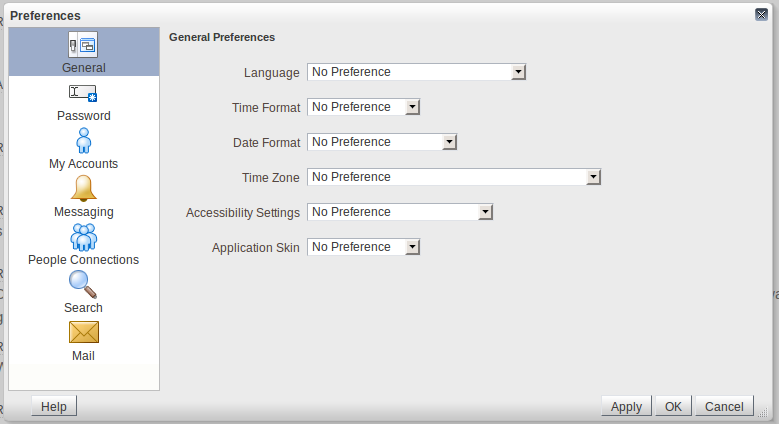
back to top
Is this going into product? Will customers see this interface?
Some of what you see will filter into subsequent releases of WebCenter. However, this exact interface probably will not, although it will influence future versions of WebCenter.back to top
Why did you replace the WebCenter landing page with Activities?
We replaced the existing landing page because it created a rather lonely experience, i.e. there were no cues as to what was happening, who was using it and for what. The Activities page aims to show you immediately that IR is a live community and give you a glimpse of what your colleagues are doing.back to top
Who's responsible for these changes?
The interface changes to webcenter.us.oracle.com are a collaborative effort between the Oracle AppsLab and WebCenter development.back to top
Feature-related questions
What's new?
We've dramatically changed the WebCenter experience. Here are the biggest changes.1. We added a publisher.
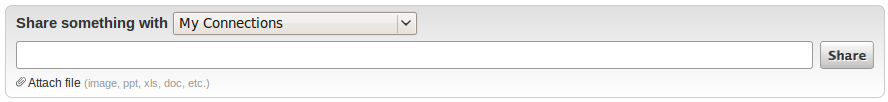
If you've used consumer sites like Facebook and Twitter or internal sites like Connect (connect.oraclecorp.com) and OraTweet (oratweet.oraclecorp.com), you'll recognize the new publisher. The publisher provides a fast way to share information with your network of connections or any of your group spaces. When you share something, a message board item is created and displayed.
The publisher also supports document upload. Documents are uploaded to UCM into your public folder or into the folder of your group space.
You can use the "Share something with" dropdown to share with your connections or any of your group spaces.
2. We changed the navigation.
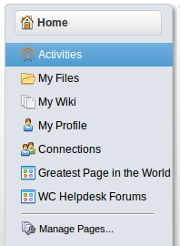
We moved most of the navigational elements from tabs into a left-hand navigation model. Plus, we made several pages persistent for everyone's personal space. The pages everyone sees are: Activities, My Files, My Wiki, My Profile and Connections. Under those five, we display any personal pages or group space pages that you've added to your personal space.
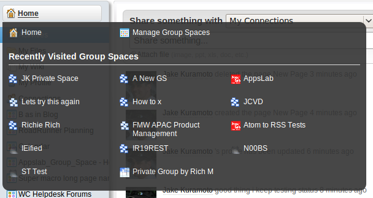
We also added a nifty way to navigate to your group spaces. Simply hover over the Home item, and you'll see a list of your most recently accessed group spaces. When you navigate to a group space, the left-hand navigation list will change to reflect that space.
3. We put focus on activity.
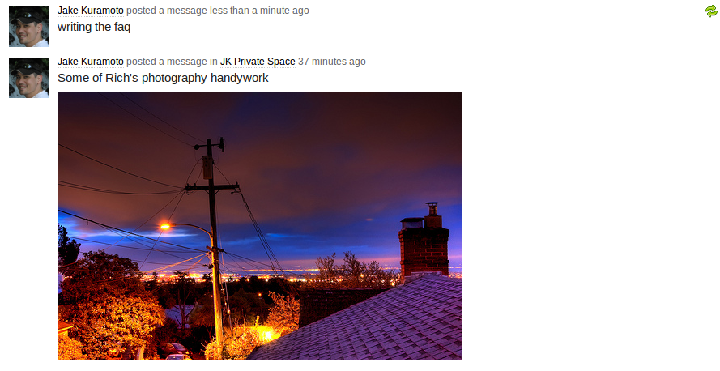
Finally, we made the activity stream the centerpiece for the experience to allow a quick view into what your connections and group spaces are doing. The activity stream shows all that happens within WebCenter, including the messages you share (whether with connections or with group spaces), your document activity, network connection information, personal status updates, activity in your group spaces and more.
back to top
What is shown in the Home page?
By default, we show your activity, both with your connections and within group spaces, and the activity of your connections.back to top
Why don't I see any activity?
If you don't see any activity, don't fret. As soon as you start sharing, you'll see your own activity, but what's the fun in that? To get the most out of WebCenter, search for people you know and ask them to connect with you. Once they accept your invitation, you'll begin to see their activity too.back to top
How do I comment on a post?
In this version, we don't have the ability to comment on the items you see in the activity stream. However, we realize this is a limitation, and we're working to add comments very soon. Stay tuned.back to top
Who can see my activity?
Well, obviously you can, but aside from you, anyone with whom you've connected will see your activity, if it's posted to your personal space, i.e. shared with "My Connections". Additionally, people who belong to a group space will see the activity that happens within that group space.back to top
How can I reply to a post I see in my activity?
Since we don't have comments yet, you can follow the Twitter convention, i.e. @ plus the person's name. So, if you see a post by Rich Manalang that you'd like to discuss, you could share your comment with @Rich to let him know. We'll be adding comments soon.back to top
What video sites do you support for inline viewing?
We currently support YouTube and Vimeo for inline viewing. If you share a link to a video hosted on youtube.com or vimeo.com, we embed a viewer so the video can be watched directly within the activity stream.
Here's how each site renders:
YouTube

Vimeo
Here's how each site renders:
YouTube
Vimeo
back to top
What image types do you support for inline viewing?
When you share a link to an image or upload an image file, we resize (if necessary) and embed the image in the activity stream for easy viewing. We do this for the file types .jpg, .jpeg, .png and .gif. Windows users, please note we do not support .bmp for inling viewing. Sorry.Here's an example of how a link to an image renders:
Here's an example of how an uploaded image file renders:
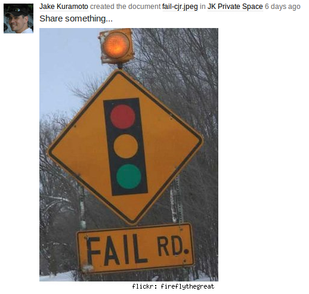
back to top
How do captions work for inline content?
Say you'd like to add a caption an image you're uploading. Here's an example:
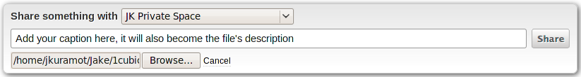
Here's the result:
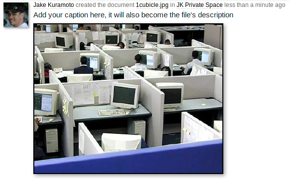
Plus, your caption becomes the file's description in UCM.
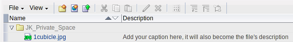
Say you're sharing a link to an image and want to add a caption. Here's an example:
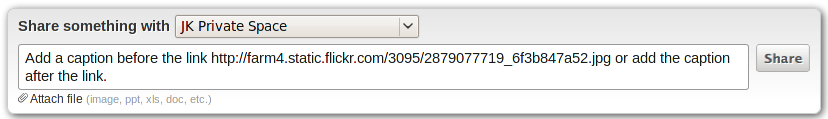
Here's the result:
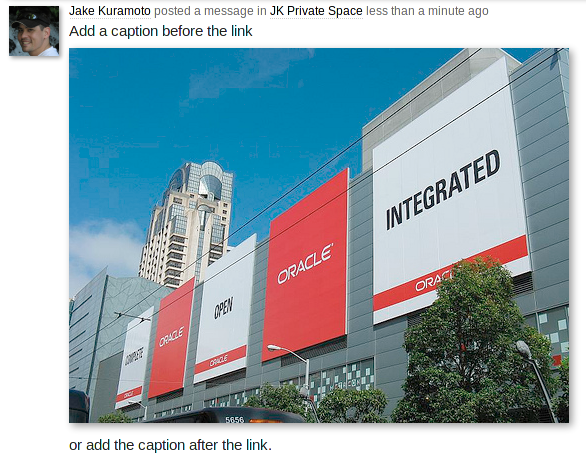
back to top
Here's an example:
Captions work the same way they do with image file captions.
For now, Powerpoint files and several image file formats are what we support for inline viewing. In future iterations, we will support other common file types.
Please note, this viewer currently does not work in any version of Internet Explorer. Future iterations will support IE as well.
Also, if you are uploading a .ppt file, it will take some time to post-process the slides and create the viewer content. The more slides, the longer it will take. So, be patient; we'll get there when we get there.
back to top
The easiest way to find and invite people is by clicking Connections in the left-hand navigation column. On your Connections page, click the Find and Invite People link and enter the name of the person you'd like to invite. Click the Invite link and add a personal note to the invitation.

Clicking the Sent link on this page will show you all the invitations you have outstanding. Once a person accepts your invitation to connect, you will see her/his activity on your Home page.
There are other ways to invite a person to join your network. You can view other people's connections on their profile galleries. Clicking these connections will allow you to invite them to join your network. Also, you can navigate directly to a person's profile gallery and get connected.
back to top
You can accept, decline or delete (i.e. ignore) invitations here. Once you accept a person's invitation to connect, you will see her/his activity on your Home page.
back to top
Click Attach file and browse to the file on your local drives, add a description and Share. The file will be uploaded to your public folder.
You can also upload and manage your files by clicking My Files in the left-hand navigation column. This opens the document library manager.
back to top
back to top
You may navigate to any space listed by clicking its name, or to dismiss the dialog, simply move your cursor somewhere else on the page. The dialog is available from any page with WebCenter, including within group spaces. To open it, simply move your cursor over the group space name in the left-hand navigation column.
back to top
There is no limit to the number of spaces displayed.
back to top
Next click the Create Page button, which opens the create page dialog.
Within a group space, If you do not see Manage Pages link, you have not been granted privileges to add pages.
back to top
In the resulting pop-up dialog, identify the page you want to edit and click the gear icon to the right. If you have permission to edit the page, you'll see an edit option in the menu.
back to top
Any group space that was initially created with a site template and/or used a different skin will look just as it did prior to our redesign. All new group spaces will have our new look and feel.
back to top
back to top
To create a page in your personal space, click Manage Pages, and then Create Page:
Choose a name for your page and select Blank scheme:
In the Composer, click Add Content and find the Worklist taskflow, which resides at the top level of the catalog.
Click Add to add the Worklist taskflow, close the catalog and save and close the page to view your worklist. This page will always be accessible in your left-hand navigation menu.
back to top
For quicker access to a tags in the future, we recommend you add the Tag Center and any tags you use frequently to your Favorites.
back to top
To create a page in your personal space, click Manage Pages, and then Create Page:
Choose a name for your page and select Blank scheme:
In the Composer, click Add Content and find the Notes taskflow, which resides at the top level of the catalog.
Click Add to add the Notes taskflow, close the catalog and save and close the page to view your notes. This page will always be accessible in your left-hand navigation menu.
back to top
To create a page in your personal space, click Manage Pages, and then Create Page:
Choose a name for your page and select Blank scheme:
In the Composer, click Add Content and find the Worklist taskflow, which resides at the top level of the catalog.
Click Add to add the Worklist taskflow, close the catalog and save and close the page to view your worklist. This page will always be accessible in your left-hand navigation menu.
back to top
To create a page in your personal space, click Manage Pages, and then Create Page:
Choose a name for your page and select Blank scheme:
In the Composer, click Add Content and find the Recent Documents taskflow, either by searching for it or by navigating to the Documents folder:
Click Add to add the Recent Documents taskflow, close the catalog and save and close the page to view your worklist. This page will always be accessible in your left-hand navigation menu.
back to top
Because navigation is critical to the overall experience and to avoid any accidental hiding of the navigational functions, we decided to remove the ability to collapse the left-hand column.
back to top
Consistency of experience is a good thing. As an example, think about the differences between the user experiences of MySpace and Facebook.
back to top
On the resulting page, select Create.
back to top
Are there viewers for any other file types?
Glad you asked. We also provide a viewer for uploaded Powerpoint presentations. When a file with a .ppt extension is uploaded, we render a slide viewer in the activity stream for quick browsing through the slides.Here's an example:
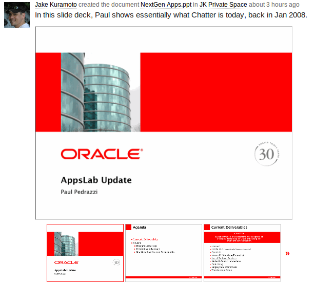
Captions work the same way they do with image file captions.
For now, Powerpoint files and several image file formats are what we support for inline viewing. In future iterations, we will support other common file types.
Please note, this viewer currently does not work in any version of Internet Explorer. Future iterations will support IE as well.
Also, if you are uploading a .ppt file, it will take some time to post-process the slides and create the viewer content. The more slides, the longer it will take. So, be patient; we'll get there when we get there.
back to top
How-to questions
How do I invite someone to join my network?
To build a network of people you know at Oracle, use People Connections, which was introduced in WebCenter 11g Patchset 1.The easiest way to find and invite people is by clicking Connections in the left-hand navigation column. On your Connections page, click the Find and Invite People link and enter the name of the person you'd like to invite. Click the Invite link and add a personal note to the invitation.
Clicking the Sent link on this page will show you all the invitations you have outstanding. Once a person accepts your invitation to connect, you will see her/his activity on your Home page.
There are other ways to invite a person to join your network. You can view other people's connections on their profile galleries. Clicking these connections will allow you to invite them to join your network. Also, you can navigate directly to a person's profile gallery and get connected.
back to top
How do I accept an invitation to network?
When you've been invited to join someone's network of connections on webcenter.us.oracle.com, you will receive an email. After logging in, you can accept the invitation by going to Connections in the left-hand navigation column and clicking the Received link.
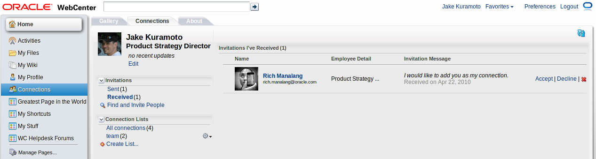
You can accept, decline or delete (i.e. ignore) invitations here. Once you accept a person's invitation to connect, you will see her/his activity on your Home page.
back to top
How can I upload and manage my documents?
There are two ways to upload documents to your personal document library. For quick sharing, you can use the publisher to add files to your public folder.
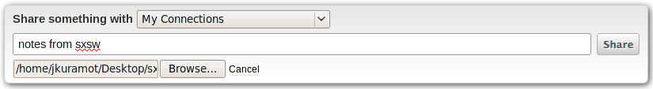
Click Attach file and browse to the file on your local drives, add a description and Share. The file will be uploaded to your public folder.
You can also upload and manage your files by clicking My Files in the left-hand navigation column. This opens the document library manager.
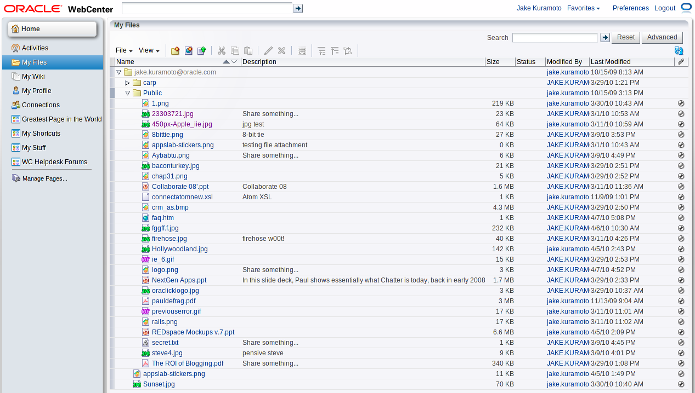
back to top
How do I setup WebDAV to manage my documents?
For detailed instructions on setting up WebDAV, click here.back to top
How do I find my Group Spaces?
To access your group spaces, simply move your cursor over Home in the left-hand navigation column. A listing of the spaces you have most recently accessed and spaces to which you belong is displayed.
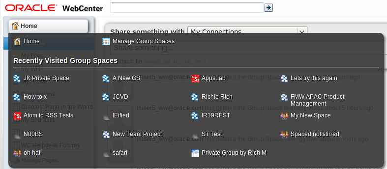
You may navigate to any space listed by clicking its name, or to dismiss the dialog, simply move your cursor somewhere else on the page. The dialog is available from any page with WebCenter, including within group spaces. To open it, simply move your cursor over the group space name in the left-hand navigation column.
back to top
What Group Spaces are displayed in the list?
The list of spaces displayed in the new group space dialog includes, from left to right, top to bottom:- The last ten spaces you've accessed from most to least recent.
-
Spaces to which you belong, ordered alphabetically, omitting any spaces that appear in the last ten accessed.
There is no limit to the number of spaces displayed.
back to top
How do I create a page?
To create a page in either your personal space or in a group space, click the Manage Pages link.
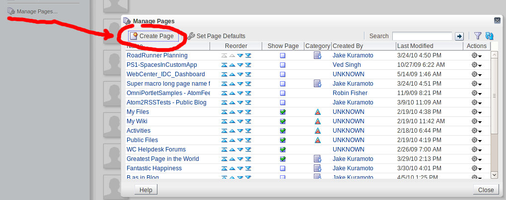
Next click the Create Page button, which opens the create page dialog.
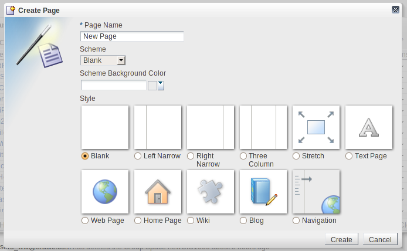
Within a group space, If you do not see Manage Pages link, you have not been granted privileges to add pages.
back to top
How do I edit a page?
To edit a page, first click the Manage Pages link, which appears in the left-hand navigation panel.In the resulting pop-up dialog, identify the page you want to edit and click the gear icon to the right. If you have permission to edit the page, you'll see an edit option in the menu.
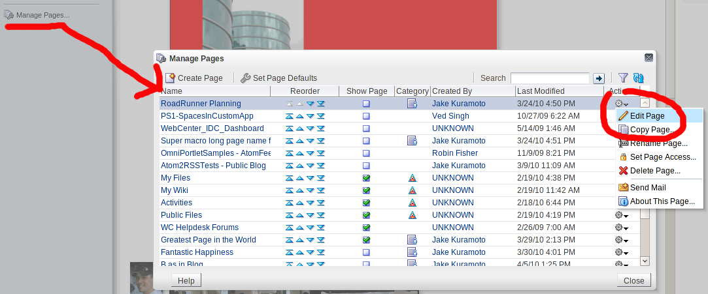
back to top
Why do some group spaces look so different?
Our changes only affect personal spaces, newly created group spaces and existing group spaces that did not customize the site template and skin.Any group space that was initially created with a site template and/or used a different skin will look just as it did prior to our redesign. All new group spaces will have our new look and feel.
back to top
How can I find my Saved Searches?
If you have saved searches, they can be found from any search results page. Search for any term, click the More button:
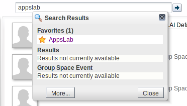
You'll see your previously saved searches on the results page.
You'll see your previously saved searches on the results page.
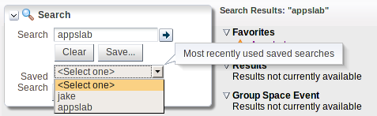
For quicker access to a saved search in the future, we recommend you add the search to your Favorites.
For quicker access to a saved search in the future, we recommend you add the search to your Favorites.
back to top
How do I find my invitations to join a group space?
You may have noticed our changes have removed the left-hand menu. In order to view your Worklist, which contains your group space invitations, you'll need to create a page in your personal space and add the Worklist taskflow to it. You should be receiving emails when you are invited to join a group space, which will also help you keep track of your invitations.To create a page in your personal space, click Manage Pages, and then Create Page:
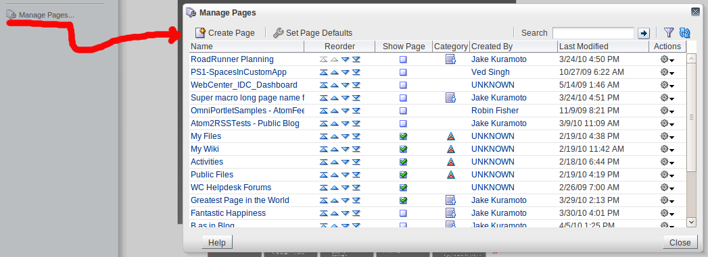
Choose a name for your page and select Blank scheme:
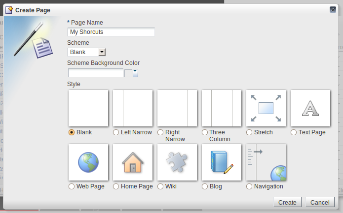
In the Composer, click Add Content and find the Worklist taskflow, which resides at the top level of the catalog.
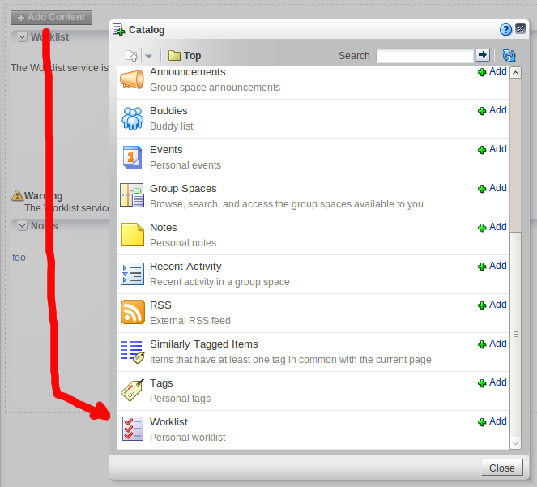
Click Add to add the Worklist taskflow, close the catalog and save and close the page to view your worklist. This page will always be accessible in your left-hand navigation menu.
back to top
How do I access my Tags?
If you've used tags in the past, you can access the Tag Center from the search box or from the search results page. Begin by searching for the tag and either click the tag itself to go to the Tag Center or click the More button to see the full set of results.
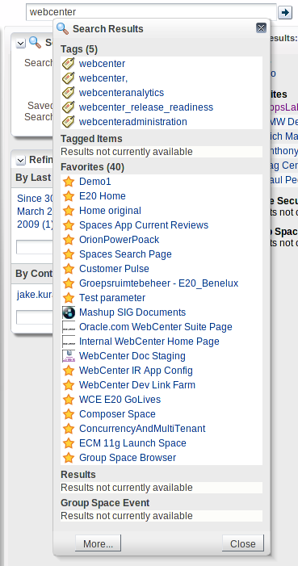
For quicker access to a tags in the future, we recommend you add the Tag Center and any tags you use frequently to your Favorites.
back to top
How do I access my Notes?
You may have noticed our changes have removed the left-hand menu. In order to view your Notes, you'll need to create a page in your personal space and add the Worklist taskflow to it.To create a page in your personal space, click Manage Pages, and then Create Page:
Choose a name for your page and select Blank scheme:
In the Composer, click Add Content and find the Notes taskflow, which resides at the top level of the catalog.
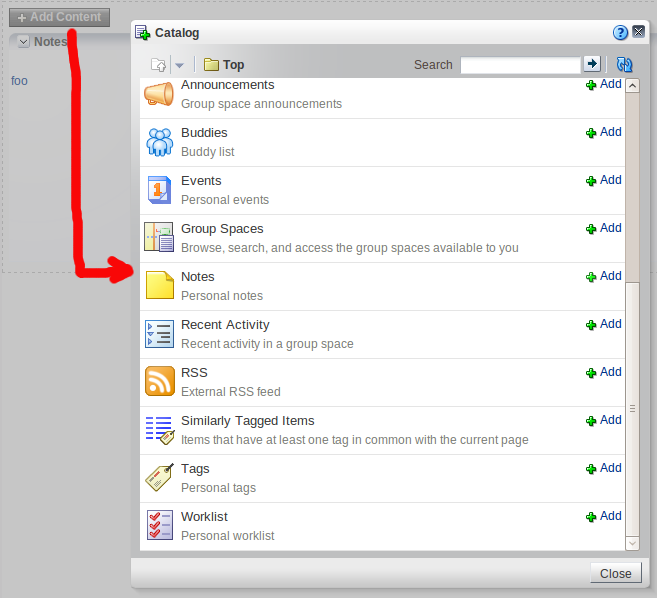
Click Add to add the Notes taskflow, close the catalog and save and close the page to view your notes. This page will always be accessible in your left-hand navigation menu.
back to top
How do I access my Worklist?
You may have noticed our changes have removed the left-hand menu. In order to view your Worklist, you'll need to create a page in your personal space and add the Worklist taskflow to it.To create a page in your personal space, click Manage Pages, and then Create Page:
Choose a name for your page and select Blank scheme:
In the Composer, click Add Content and find the Worklist taskflow, which resides at the top level of the catalog.
Click Add to add the Worklist taskflow, close the catalog and save and close the page to view your worklist. This page will always be accessible in your left-hand navigation menu.
back to top
How do I access my Recent Documents?
You may have noticed our changes have removed the left-hand menu. In order to view your Recent Documents, you'll need to create a page in your personal space and add the Recent Documents taskflow to it.To create a page in your personal space, click Manage Pages, and then Create Page:
Choose a name for your page and select Blank scheme:
In the Composer, click Add Content and find the Recent Documents taskflow, either by searching for it or by navigating to the Documents folder:
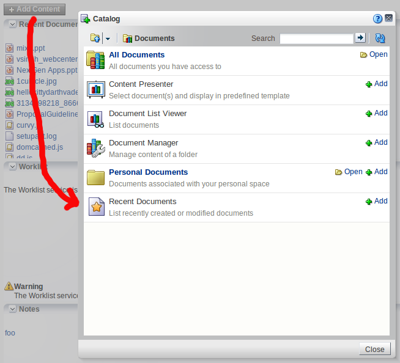
Click Add to add the Recent Documents taskflow, close the catalog and save and close the page to view your worklist. This page will always be accessible in your left-hand navigation menu.
back to top
How can I collapse the left hand navigation bar?
Currently, we do not offer the ability to collapse the left-hand navigation area. The left-hand column previously contained shortcuts to specific task flows, but it has been repurposed to contain navigational items that are relevant to whichever space is being used.Because navigation is critical to the overall experience and to avoid any accidental hiding of the navigational functions, we decided to remove the ability to collapse the left-hand column.
back to top
Can I change the skin? Why don't I see the skin I was using previously?
To ensure that every user receives the same user experience and see the same interface, we have removed the ability to change the application skin. If you had previously changed your skin, we have changed your setting to match the skin we use.Consistency of experience is a good thing. As an example, think about the differences between the user experiences of MySpace and Facebook.
back to top
How do I create a new Group Space?
To create a new space, activate the group spaces dialog by moving your cursor over the Home (or group space name) item in the left-hand navigation column, and select Browse Group Spaces.
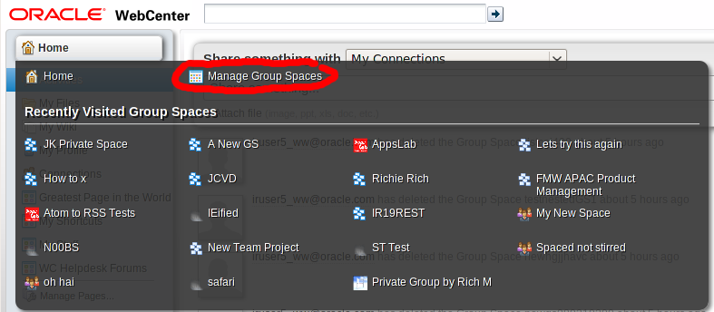
On the resulting page, select Create.
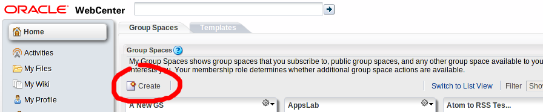
back to top
What is the URL to my Group Space?
If you are the moderator of a group space, you can find the URL to your space by navigating to the Settings page in the left-hand navigation and choosing the General tab.
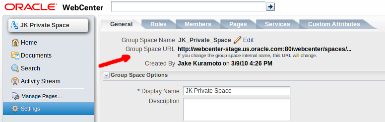
back to top
How do I add members to my Group Space?
If you are the moderator of a group space, you can add or invite members to your space by navigating to the Settings page in the left-hand navigation and choosing the Members tab.
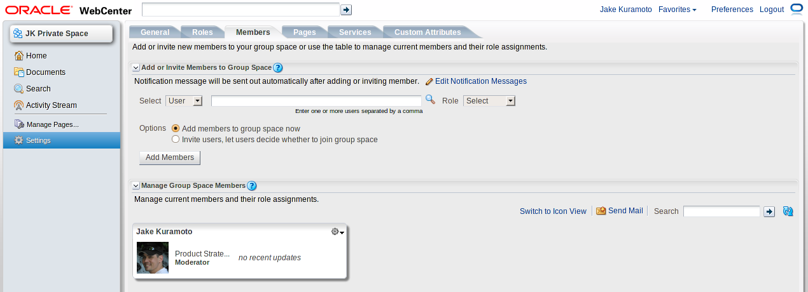
Search for the user you'd like to add or invite, then choose a role to assign the user and add or invite the person. Roles are defined under the Roles tab.
back to top
How do I delete an item from my activity stream?
When you share an item via the publisher, a message board entry is created. Although you can delete a message board item from the message board taskflow, you cannot remove items directly from the main Activities page.
The Activities page uses the REST APIs to display data, not the taskflows. This is why the behaviors are slightly different. These differences will be resolved in future releases of WebCenter, and we will implement and uptake those changes when they are available.
On a related note, if you remove an item from the message board taskflow, you will see a deletion item in your activities. This only appears to you, not to your connections.
back to top
back to top
The Activities page uses the REST APIs to display data, not the taskflows. This is why the behaviors are slightly different. These differences will be resolved in future releases of WebCenter, and we will implement and uptake those changes when they are available.
On a related note, if you remove an item from the message board taskflow, you will see a deletion item in your activities. This only appears to you, not to your connections.
back to top
How do I report an urgent problem?
For any priority issues that need prompt attention, send an email to owcadmin_ww@oracle.com.back to top
How do I get to the WC Helpdesk Forums page?
If you previously used the personal page page called "WC Helpdesk Forums" to report or monitor non-urgent issues and questions, you'll notice it's not showing the correct forum anymore. This is a bug that we're working to fix.If you need to access that discussion forum, search for WC Helpdesk and go to the Discussion page. We recommend you add this to your Favorites if you need to access it frequently.
back to top
Where do I sign-up to get updates about webcenter.us.oracle.com?
To get updates about webcenter.us.oracle.com, you can subscribe to the owcusers_ww@oracle.com mailing list using APS.back to top
How can I change my password for webcenter.us.oracle.com?
Webcenter.us.oracle.com uses corporate SSO, which is a requirement for all production web applications inside the corporate firewall. To change your SSO password, use APS.back to top